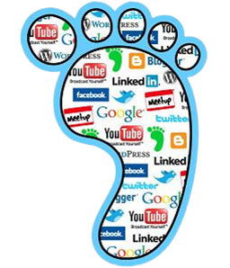

Curso Profissional - Disciplina de IMEI
A pegada digital diz respeito a tudo o que está na internet, desde o nosso perfil numa rede social, informação publicada em blogs, discussões em fóruns.
A pegada digital não depende apenas do que nós publicamos, mas também do que os outros publicam sobre nós.
Os posts que coloca no blog, as fotografias e comentários que partilha no Facebook e os ficheiros que guarda na cloud fazem parte da sua pegada digital.
A pegada digital de cada individuo é constituida de duas formas:
A forma PASSIVA reporta-se ao que os outros colocam sobre cada um de nós.
A forma ATIVA diz respeito ao que nós publicamos: blogs, artigos, fotografias, videos, etc..